Streamflow Model Evaluation#
Overview#
In broad strokes, the evaluation workflow contains these components:
{kind=link}
This can be broken down per variable, as there are different reference datasets for variables, as well as aggregation methods. Examples below will emphasize streamflow as an example, comparing historical stream gage readings against the NWM streamflow predictions for those gages.
Each of the yellow boxes in the block diagram is mapped to a notebook in which that bit of processing takes place.
Source Data#
Source datasets include modeled data ( NWM or NHM, for example) and a reference dataset representing the ‘observed’ values covering the same variable and temporal range. For streamflow data, we have actual gage readings. For other variables, we have other standard datasets representing the reference against which the model will be compared.
Source datasets are found in a variety of storage mechanisms. The main mechanisms that we need to be able to accomodate are:
‘on-prem’ data stored on
/caldera, accessible by one of the HPC hosts.Object storage in the ‘cloud’ – typically an S3 bucket in the AWS cloud computing ecosystem.
API request – Data is offered by a provider as a network service. An Aplication Programming Interface call is made from within a python program to fetch the data from the network provider. This is typically via http or ftp transfer protocols.
Intake catalog – this is a convenience mechanism which can handle much of the infrastructure needed to access data, regardless of protocol. We use intake catalogs whenever possible, since they simplify the access mechanism and hid implementation details.
The source datasets may be replecated among two or more of these access methods. Which copy to
use may depend on where the processing takes place (i.e. if running a notebook on denali or
tallgrass, on-prem data is preferred over S3; if running on a cloud environment (esip/qhub),
S3 is preferred.)
Data Preparation Notebook#
This pre-processing step is needed in order to rectify the data and organize it in preparation for analysis. Rectifying the data includes measures such as:
Organizing the time-series index such that the time steps for both simulated and observed are congruent;
Coordinate aggregation units between simulated and observed (e.g. indexed on ‘gage_id’ with similar string formats: ‘USGS-01104200’ vs ‘01104200’)
Re-Chunking the data to make time-series analysis more efficient
Obtaining data from an API and storing it in more efficient format for reuse
At this stage, a given variable should be represented as a pair of 2D array of values (one for simulated, one for observed). One dimension of the array is indexed by some nominal key (‘gage_id’, ‘HUC-12 ID’, etc), while the other dimension is indexed by time step.
Analysis Notebook#
The above data organization steps will allow us to extract a time series for a given station from each of the simulated and observed datasets, and run a series of statistical metrics against these values to evaluate Goodness Of Fit (GOF). Benchmarking proceeds according to this general recipe:
A set of predictions and matching observations (i.e. the data, established above);
The domain (e.g. space or time) over which to benchmark
This will vary by variable and by dataset. For streamflow, the list of ‘cobalt’ gages (Foks et al., 2022) establishes the spatial domain identifying which gages to consider.
Other variables will have other definitions for domain, which restrict analysis to a specific set of locations or times.
A set of statistical metrics with which to benchmark.
In this tutorial, we are focusing on streamflow and the metrics relevant to that variable.
A different set of metrics may be used for other variables.
We will be using the ‘NWM Standard Suite’ and ‘DScore’ metrics to analyize streamflow.
The end result of this analysis is a 2D table of values. One dimension of this array/table is the same nominal data field (i.e. ‘gage_id’), the other dimension being the metrics comparing observed vs simulated for that gage. It is this table of values we send to the visualization step.
Vizualization Notebook#
Visualization steps offer different views of the metrics, plotted in various ways to allow for exploration. In addition to these interactive visualizations, a score card is offered as a way of summarizing how well the model compares against the reference dataset.